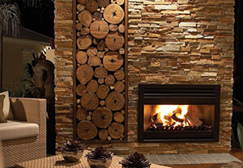

Часто в погоне за модой, делая ремонт в комнате, мы ориентируемся на новые веяния и собственный вкус. Тренд из массива дерева полезен для здоровья, так как, дерево – экологически чистый материал. Сегодня, мы остановимся на самом известном, благоприятном виде оформления жилых помещений - деревянном интерьере.
Натуральное дерево – достаточно теплый и безвредный материал для здоровья. Древесина выделяет фитонциды, источает положительную энергию, что способствует качеству здоровья. Сам по себе деревянный предмет интерьера, выглядит роскошно, отлично дополняя любые отделки и элементы декора в доме. В деревянном доме, уместны деревянные полы, панели, столы, комоды, камин. В таком доме легко дышать, наслаждаясь свежестью и гармонией. Если дом каменный, то в нем нужно использовать тёплые, нежные тона, но мебель и полы, обязательно должны быть из дерева, так как этот продукт не вредит нашему организму. Интерьер из дерева останется всегда актуальным. Натуральные породы дерева подчеркнут вкус хозяев. Самую огромную популярность получили дачные коттеджи и загородные дома, выполненные в прекрасном стиле. Экологическую чистоту самого материала, можно потерять, если в производстве использовались краски и лаки, клеящиеся поверхности. Материал должен обрабатываться только натуральным маслом или воском.
По сравнению с другими строительными материалами – дерево, самый энергосберегающий материал, а потому и самый экономичный. Зимой, в такой доме будет достаточно тепло, так как он обладает теплоизоляционными свойствами, в отличие от кирпичных и блоковых материалов. За свое здоровье можно совсем не переживать, так как доказано, что « теплый, золотистый цвет» оказывает позитивное влияние на нас, способен успокоить, снять стресс. Также, древесина регулирует влажность в внутри помещения, дает дышать во всеоружии.
Самым красивым декором мебели, считаются деревянные полы, паркет. С ним ваша комната и весь декор останутся не только красивыми, но и прочными на много лет вперед.
Камин, особенно в декоративных нотках из дерева, выглядит презентабельно и изысканно. Если комната совсем небольшая, то подойдут угловые камины, а фронтальные можно устанавливать в залах.
Деревянный стол и стулья. Такая мебель станет просто шикарным атрибутом в интерьере. От того, каким он будет зависит ваш полет фантазии. За таким уютным, красивым столом будут постоянно собираться родные и друзья. Он станет вашим украшением, особенно, если мебель лакированная.
Деревянный комод. Это стильная мебель, позволяющая с удобством разместить множество вещей. Этот традиционный элемент мебели, не утратил своей актуальности. Комод из массива дерева выглядит утонченно и прекрасно вписывается в любой интерьер.
Естественно, что дерево – уникальный материал, который используют для разработки стильной мебели. Дерево сам по себе очень требовательный по уходу материал. Прежде, чем оформлять комнату, стоит знать, какой материл более или менее вам понадобится, а точней, какая фактура дерева. Популярным видом дерева можно назвать дуб. Он эстетичен и прочен, почти не гниет.
Поверхность дерева из дуба, лучше всего покрывать лакированными красками:
Ясень – прочная древесина. Отличается разнообразием оттенков. Кстати, прочней дуба.
Орех – имеет декоративную привлекательность. Прочный материал., устойчив к сушке.
Клен – дерево не из дешевых пород. Очень прочный материал, недостатков нет.
Кедр - устойчивое дерево к гниению. Очень качественный материал, древесина устойчива к влаге.
Ольха - легкое и мягкое дерево, прочное по структуре. Очень легко поддается обработке.
Береза (карельская) – ценится за прочность и твердость. Доступный материал.
Выбирая цветовые оттенки для мебели, производители выделяют несколько видов:
Белый – несет удачу
Серый – вносит стабильность, пассивность
Желтый - повышает интеллект
Зеленый - расслабляет
Красный – вносит страсть
Розовый – дарит романтику
Пусть ваш интерьер станет местом, в котором вы будете всегда чувствовать гармонию, наслаждение.
Стильная мебель из дерева в Алматы
Источник: miraman.ru